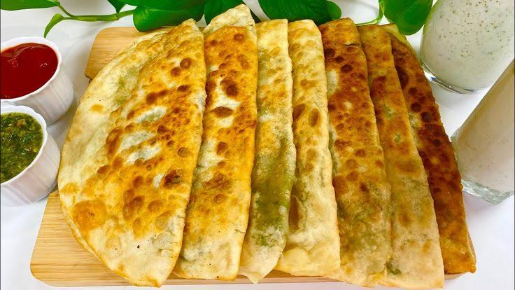
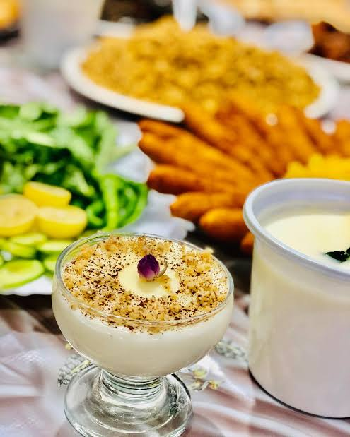
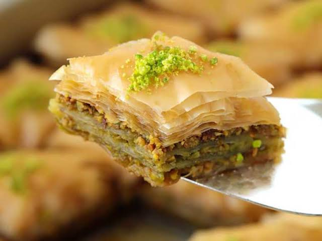
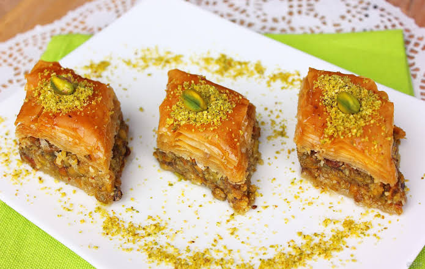
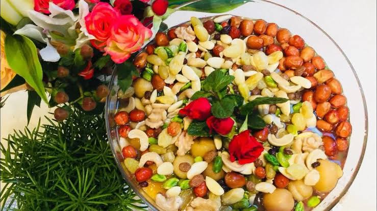
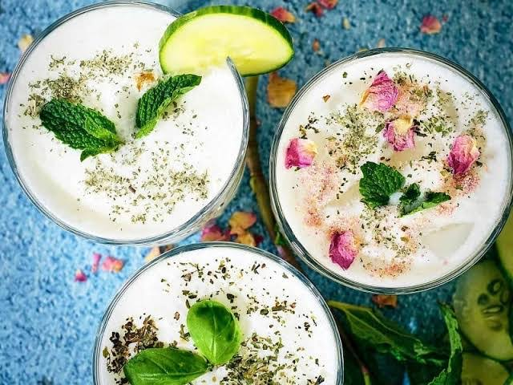
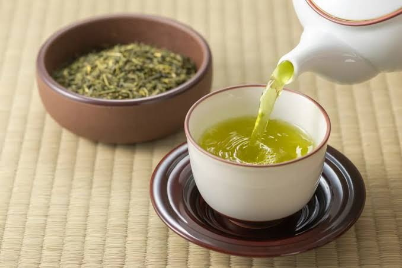

In this section, I have listed types of local Afghan foods, desserts, and drinks along with their clear preparation methods. Enjoy!
Foods Section
Afghan Manto
Ingredients List:
Meat
Flour
Onion
Spicy green chili
Salt
Ground coriander
Black pepper
Oil
Tomato sauce
Water
Yogurt
Garlic
Instruction Of Cook:
Add flour, water, salt and oil to the mixer and start your mixer. After a few minutes, you should notice the dough coming together. It will start to look like a stretchy piece of dough and will begin to grab your dough hook.
Add oil to pan, After the oil is heated, add onion. Sautee onion for about 2 minutes. Then, add tomato sauce and spices. Stir and simmer for an additional 5 minutes. cook for 2 minutes and set aside.
Mix meat ingredients from above until thoroughly combined. This will take several minutes.
And roll the dough thinly. Next, use a knife or pizza cutter and divide the rolled-out dough into equal-sized squares.
Once that is done, put a scoop of filling into the center of one square. For the folding method, take opposite corners and pinch them together.
Next, grease steamer basket place dumplings in the greased steamer basket. Cover steamer basket and let steam for approximately 30-35 minutes.
Finally, to serve, place the dumpling on a platter top with the reheated tomato sauce, our yogurt sauce, and garnish with cilantro.
Author:
Submitted By Sanam Ahmadi
Kabuli Pulao
Ingredients List:
Meat
Carrot
Onion
shugar
Salt
Rice
Cumin seed
Oil
Char masala
Water
raisin
Garlic
Instruction Of Cook:
Rinse your rice and let the rice soak.
we are going to prepare the meat. break out your instapot, pressure cooker, or regular pot. Add your oil and heat. Add your onions. Add your roughly cut garlic. Cook for 30 seconds and then add cumin.
we will add our meat. Then add a tablespoon of salt. Finally, add 3 Cups of water. I cook in my instapot for 25 minutes on high pressure. If you cook in a regular pot it will probably take about an hour. You want the meat to be fork tender.
While your meat is cooking, next cook your carrots and raisins.
Boil a large pot of salted water. Take your rice that you have rinsed and soaked and add to the boiling water. This is a step you have to watch. I can not give you an exact amount of time to cook the rice. But, you are only partially cooking your rice.
Next, we are going to make our sugar solution to add a caramel color to our rice. In a pan add quarter cup of vegetable oil. Add your sugar. Let the sugar darken. Add 1/2 Cup of water, set aside.
Take your meat out of the broth when done cooking. Now it is time to assemble everything. Take a big pot and add half of your rice to the bottom. Then, add your meat. Then add last of the rice. after that, use a few scoops of the meat broth, add the sugar mixture, and char masala.
Poke some holes in the rice with the handle of a spoon. This will allow steam to release better. Take your packet of raisins and carrots and place in pan on top of your rice. I cover mine with more foil then put lid on rice.
Cook on stove top on medium-low heat for about 25 minutes.
Author:
Submitted By Ali Hossaini
Bolani

Ingredients List:
Lukewarm water
Flour
Active dry yeast
Spicy green chili
Salt
Potatoes
stalk green onion
Oil
Black pepper
Water
Ground turmeric
Instruction Of Cook:
To a large bowl, add the water, oil, salt, and yeast. Stir. Then add the flour. Mix well. let it rest for 30 minutes at room temperature.
Meanwhile, cook the potatoes in a large pot of boiling water for 15 minutes. When the potatoes are fully cooked through, drain and transfer to a large bowl.
Add the green onion, cilantro, chili pepper, and spices to the bowl as well. Use a fork or potato masher to mash everything. It's okay if a few lumps remain.
Use a rolling pin to roll each ball into a thin circle about 20 - 22 cm in diameter, about as thin as a tortilla. The thinner the better, but not too thin that it will rip if handled.
Fold the dough in half, over the filling, to create a half-moon shape. and potatoes and vegetables put it and press out all the air bubbles, then pinch the edges with your fingers to fully seal the bolani.
Add a bit of the oil to a large pan over medium-high heat. When hot, add the bolani to the pan. Cook for 2 - 3 minutes. Meanwhile, use a silicone pastry brush to brush some more oil on top of the bolani
When the bottom is golden, flip, and let cook on the other side until golden. Then transfer to a cooling rack. Continue with the remaining bolani.
Cut the bolani in triangles and serve with green chutney. Enjoy!
Author:
Submitted By Zainab Aydin
Dessserts Section
Firni

Ingredients List:
Coconut milk
Milk
White sugar
Rice
Raisins
Ground cardamom
Rose water
Sliced almonds, toasted
Chopped pistachio nuts
Directions:
Bring coconut milk, milk, and sugar to a boil in a large saucepan over medium heat. Add rice, reduce the heat to low, and simmer until mixture thickens and rice is tender, about 20 minutes.
Stir in raisins, cardamom, and rose water; cook for a few more minutes. Ladle into serving bowls and garnish with almonds and pistachios.
Author:
Submitted By Zahra Pouia
Baklava
 
Ingredients List:
Pound chopped nuts
Teaspoon ground cinnamon
Package phyllo dough
Butter, melted
White sugar
Water
Honey
Vanilla extract
Grated lemon zest
Directions:
Preheat the oven to 350 degrees F (175 degrees C). Butter a 9x13-inch baking dish.
Toss together nuts and cinnamon. Unroll phyllo and cut the whole stack in half to fit the dish. Cover phyllo with a damp cloth while assembling the baklava, to keep it from drying out.
Place 2 sheets of phyllo in the bottom of the prepared dish. Brush generously with some of the melted butter. Sprinkle 2 to 3 tablespoons of the nut mixture on top. Repeat layers until all ingredients are used, ending with about 6 sheets of phyllo.
Using a sharp knife, cut baklava into 4 long rows, then diagonally 9 times to make 36 diamond shapes. Be sure to cut all the way through to the bottom of the layers.
Bake in the preheated oven until golden brown and crisp, about 50 minutes.
While baklava is baking, combine sugar and water in a small saucepan over medium heat and bring to a boil. Stir in honey, vanilla, and lemon zest; reduce heat and simmer 20 minutes.
Remove baklava from the oven and immediately spoon syrup over it. Let cool completely before serving. Store uncovered.
Author:
Submitted By Ahmad Ahmadi
Haft Miwa

Ingredients List:
Shelled and peeled nuts. I used walnuts, pistachios, and almonds.
Dried fruits. I used two different kinds of raisins, cherries, and apricots.
Rose water. You could swap this for pure vanilla extract.
Filtered water.
Directions:
First, make sure that your nuts are peeled. Don't skip this step.
To peel the nuts: in a large pot, bring 3 cups of water to a boil. Remove from heat and add the walnuts and pistachios. Let sit until water is slightly cool, about 15 minutes, and add almonds. Let sit for about another 15 minutes, or until water is luke warm. Peel the nuts in the bowl of water with your hands and set the peeled nuts aside on a towel. This can be very time consuming so be patient and enjoy the process.
Rinse the dried fruit and add it to a large serving bowl.
Add the nuts to the bowl and stir to combine.
Add the rose water or vanilla and water and stir to combine.
Cover the mixture and refrigerate for 3 days, stirring once a day.
Serve and enjoy!
Author:
Submitted By Abbas Ahmadi
Drink Section
Kimak Tea
Ingredients List:
Whole milk
Heavy cream
Water
Green tea
Baking soda
Ice cubes
Sugar
Milk
Cardamom
Directions:
Add milk and heavy cream to large heavy-duty sauce pan. Let come to a boil. Aerate it while it comes to a boil.
Allow to cook for 2-3 hours on medium low. Watch the video to get an idea of what it will look like. The cream will separate from the liquid. Then, scrape off and place into container. You will likely be able to do this 2-3 times. Each time will be 2-3 hours. I suggest reading a book or do some chores. Later, you make the tea base.
Start your tea by adding your water and green tea to pot and bring to a boil. You will want your baking soda ready. While your tea is boiling, make sure you have another pot of equal, actually greater size, so you can strain the tea into it. After that you will be using the two pots to toss the tea between.
Your tea as it boils will get a little foam on top, it will be white. But eventually, you want the tea to get a slight pink tint. Boil tea for 10 minutes.
Add your baking soda to the tea. Be ready to aerate quickly, you will get an exciting fizz. After a few minutes this is when you will get the pinkish bubbles. Once it gets pink, or slightly red, you will add your ice cubes to stop the process.
Your next step is straining the tea, and then aerating it. Do not wear a white sweater. Put some workout music on. Strain the tea. Once strained, pour the tea back and forth to aerate between the two pots for about 10 minutes.
Now the fun part. You will add enough milk to get the beautiful pink color. It will magically turn pink. Warm up the chai as it will cool from adding the milk. Add your sugar to taste. Keep tasting until you like it.
Add your cardamom next.
Now time to serve. Take about 2 tablespoons of your Qaimaq (clotted cream).
Author:
Submitted By Fatima Jamshidi
Doogh

Ingredients List:
Yogurt
Water
Cucumber
Mint leaves
Salt
Directions:
Chop the mint leaves and cucumber.
Put all ingredients [ yogurt, water, mint leaves, ice cubes, cucumber, salt & black salt] together in a blender.
Blend until smooth.
Garnish with mint leaves and serve.
Author:
Submitted By Sahar Afshar
Green Tea

Ingredients List:
Green tea
Green cardamom
Saffron
water
Directions:
Pour 4 cups of water into a kettle and bring to a boil. It is important to use fresh cold water. Using filtered water is best.
Add the green tea, cardamom pods, and saffron threats to your tea infuser. I am using a teapot with infuser; however, you can make this tea directly in a pot, in a thermos, or in a kettle. The infuser is a great tool, it allows for the leaves to expand and the flavor of the spices to release into the pot. If you are not using the infuser, you would need to strain tea when serving in cups. Also, it is important to use good quality tea when brewing loose leaf.
Place the infuser in the teapot and add hot water.
Close the lid and allow tea to brew for 10 minutes. I leave the infuser while I server my tea. You can remove the infuser at this point if you would like.